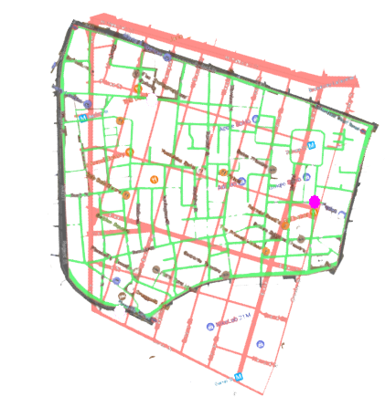

�
�
Home
Butchers
Bakers
Confectionery Makers
Forget About It | Bakers
� Pure Food Bakery & Lunch Room �
From: 83 Spring Street, SoHo, NYC (1917)
To: 53 Greek Street, Soho, London, W1D 3DR (2017)

Source: http://www.donslist.net/PGHLookups/cgi-bin/
Comment Form
is loading comments...